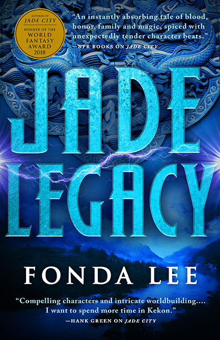

HELLO!
I'm Tooba Tariq
An Aspiring Developer
About Me
My name is Tooba Tariq and I am a 2025 Computer Science Graduate from City University of London. I am currently a Tech Trainee at La Fosse Academy, where I am building on my technical and professional skills.
I am especially interested in software engineering and data. With experience in Pythin, SQL and sata visualisation. During university I really loved modules involving data analysis and python based development.
I am interested in opportunities within software engineering and data focused roles and am excited to deepen my understanding of these topics during my time at La Fosse.
Outside of work I love to try new things, I am constanlty chanign hobbies every few weeks but the one that has stuck has always been reading. As of now I have read 10 books in 2026 and have a goal to read 40 by the end of the year. I'm a lover for Sci-fi and Fantasy. If you would like recommendations feel free to ask me!
A more recent hobby I have picked up is Pool, I am not very good but I enjoy it nonetheless.
My top reads so far in 2026:


